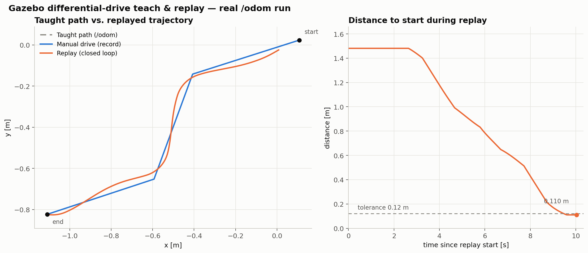
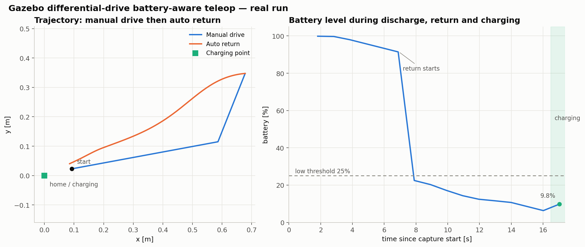
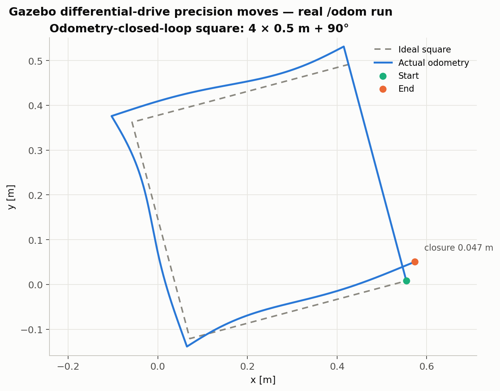
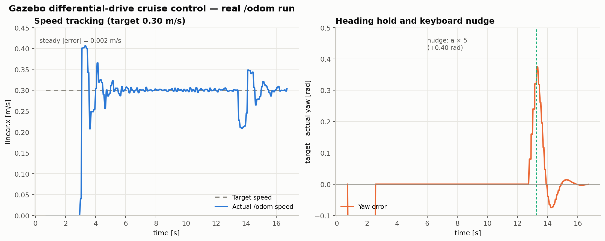

Gazebo 差速小车键盘控制与示教录制/路径回放
1. 项目概述
本项目在 ROS 2 Jazzy + Gazebo Harmonic 中搭建两轮差速驱动小车，使用 gz_ros2_control 作为 Gazebo 与 ros2_control 之间的硬件接口，使用 diff_drive_controller 把速度指令换算成左右轮转速。
模块包含以下运行方式：
- 自动巡航：
auto_drive持续发布固定速度，演示差速小车的圆弧运动。 - 键盘遥控：
teleop_keyboard发布/cmd_vel，手动驾驶小车。 - 示教录制与路径回放：记录键盘驾驶产生的
/odom轨迹，再使用纯追踪控制器沿记录路径自动返回，支持循环往返和手动接管。
本项目的重点是示教数据的采样、路径存储和闭环轨迹跟踪。所有实验都使用真实的 Gazebo 物理仿真和 /odom 里程计数据，不使用离线伪造轨迹。
2. 差速运动学基础
设左右轮半径均为 r = 0.06 m，轮距 L = 0.36 m，左右轮角速度为 ωL、ωR，则车体线速度 v 和角速度 ω 为：
v = r (ωL + ωR) / 2
ω = r (ωR - ωL) / L
反过来，给定 /cmd_vel 的 linear.x = v 和 angular.z = ω，控制器计算左右轮目标转速：
ωL = (v - ω L / 2) / r
ωR = (v + ω L / 2) / r
因此：
v > 0, ω = 0：直行；v < 0, ω = 0：倒车；v = 0, ω > 0：原地左转；v > 0, ω > 0：左转弯。
差速底盘不能直接横移，转弯半径由 R = v / ω 决定。
3. 系统架构与控制链路
键盘
│
▼
功能节点（teleop_keyboard / auto_drive / teach_replay）
│ geometry_msgs/Twist
▼
/cmd_vel
│
▼
controller_bridge
│ geometry_msgs/TwistStamped
▼
/diff_drive_controller/cmd_vel
│
▼
diff_drive_controller ──▶ gz_ros2_control ──▶ Gazebo 差速小车
│
└── /diff_drive_controller/odom ──▶ controller_bridge ──▶ /odom
Gazebo Harmonic 的 /clock 通过 ros_gz_bridge 桥接到 ROS 2。控制器启用了 use_sim_time，如果没有 /clock，控制器不会更新里程计，功能节点也就无法闭环。
controller_bridge 解决了 Jazzy 的一个接口差异：
- Jazzy 的
diff_drive_controller订阅geometry_msgs/TwistStamped； - 框架中的键盘节点和自动巡航节点发布
geometry_msgs/Twist； - bridge 把 Twist 转成带时间戳的 TwistStamped，并把控制器里程计转发为标准
/odom。
4. 目录结构
gazebo_diff_drive_teleop/
├── main.sh # 一键编译/启动
├── README.md
├── package.xml / setup.py / setup.cfg
├── config/diff_drive_controller.yaml # 控制器参数
├── launch/gazebo_diff_drive_teleop.launch.py
├── urdf/diff_drive_robot.urdf.xacro # 车体、轮子、ros2_control
└── gazebo_diff_drive_teleop/
├── __init__.py
├── teleop_keyboard.py # 键盘遥控
├── auto_drive.py # 自动巡航
├── teach_replay.py # 本项目新增功能
└── controller_bridge.py # Twist/TwistStamped 与 odom 桥
5. 运行环境与依赖
- Ubuntu 24.04
- ROS 2 Jazzy
- Gazebo Harmonic
- Python 3.12
- 依赖：
ros_gz_sim、ros_gz_bridge、ros2_control、ros2_controllers、gz_ros2_control、robot_state_publisher、xacro
sudo apt install ros-jazzy-ros-gz ros-jazzy-ros-gz-bridge \
ros-jazzy-ros2-control ros-jazzy-ros2-controllers \
ros-jazzy-gz-ros2-control ros-jazzy-robot-state-publisher ros-jazzy-xacro
6. 构建与运行
在模块所在工作空间根目录执行：
bash main.sh # 自动巡航
bash main.sh manual # 仅启动仿真
bash main.sh teach # 本项目功能
也可以手动构建：
source /opt/ros/jazzy/setup.bash
colcon build --base-paths src --packages-select gazebo_diff_drive_teleop
source install/setup.bash
ros2 launch gazebo_diff_drive_teleop gazebo_diff_drive_teleop.launch.py demo:=false
只启动 Gazebo 服务端、不打开 GUI：
bash main.sh teach gz_args:='-r -s'
main.sh 的后台/前台分工是有意的：ros2 launch 不会把终端 TTY 传给子节点，因此键盘节点必须由 main.sh 在前台通过 ros2 run 启动，才能在终端读取按键。
7. 键盘操作
通用驾驶按键：
| 按键 | 功能 |
|---|---|
w / ↑ |
前进 |
x / ↓ |
后退 |
a / ← |
左转 |
d / → |
右转 |
s / 空格 |
停止 |
q / Ctrl-C |
退出（恢复终端并发送零速度） |
本项目功能按键：
| 按键 | 功能 |
|---|---|
r |
开始 / 结束录制（重新开始会清空旧轨迹） |
p |
开始 / 暂停回放 |
l |
循环往返开关 |
c |
清空轨迹 |
s / 空格 |
停止；回放中暂停回放 |
+ / - |
调整线速度 |
8. 示教录制与纯追踪回放
8.1 状态机
teach_replay 有三个状态：
- manual：键盘驾驶，不记录也不回放。
- record：键盘驾驶，同时按采样规则把
/odom位姿追加到路径。 - replay：暂停键盘速度指令，由纯追踪控制器生成
/cmd_vel。
按 r 在 manual 和 record 之间切换；按 p 从 manual 或 record 进入 replay；按方向键、s 或 c 可以手动接管/停止。
8.2 轨迹采样
路径点不是按固定频率无脑记录，而是满足以下任一条件才追加：
两点距离 >= record_min_distance (0.05 m)
或 两点航向差 >= record_min_angle (0.10 rad)
这样可以减少静止和低速抖动造成的重复点，同时保留转弯细节。路径保存在 odom 坐标系中，最大点数由 max_path_points 限制。
8.3 回放方向
开始回放时，节点比较当前位姿到路径首尾端点的距离，选择较近的端点作为起点，向另一端回放。因此：
- 录制结束后通常在路径末端，按
p会自动反向沿原路返回起点； - 如果从起点附近开始，则正向回放；
- 开启
l后，到达端点会反转方向，在线路两端之间循环。
8.4 纯追踪控制
每一控制周期：
- 在当前路径上找到离车体最近的点
nearest； - 沿回放方向搜索第一个与车体距离不小于
lookahead_distance的点作为前视目标； - 把目标点变换到车体坐标系：
dx = target.x - pose.x
dy = target.y - pose.y
local_x = cos(yaw) dx + sin(yaw) dy
local_y = -sin(yaw) dx + cos(yaw) dy
distance = hypot(local_x, local_y)
heading = atan2(local_y, local_x)
- 当
|heading| > 1.0 rad时先原地转向；否则按距离比例给线速度，按航向误差比例给角速度； - 距离目标端点小于
goal_tolerance时停车；循环模式则反转方向。
线速度、角速度都受 linear_speed、angular_speed 限制，接近端点时额外减速，避免过冲。
8.5 安全与终端处理
- 节点启动时要求标准输入是 TTY；否则给出明确错误，避免在后台静默失败。
- 使用 cbreak 模式读取单个按键，退出时恢复原终端设置。
- 正常退出和 Ctrl-C 都会连续发送零速度。
- 底层的
main.sh在后台启动 Gazebo，在前台启动键盘节点；退出后清理整个仿真进程组。
9. 参数说明
| 参数 | 默认值 | 说明 |
|---|---|---|
linear_speed |
0.3 m/s | 最大线速度 |
angular_speed |
1.0 rad/s | 最大角速度 |
publish_rate |
20 Hz | 控制/发布频率 |
record_min_distance |
0.05 m | 采样最小距离 |
record_min_angle |
0.10 rad | 采样最小转角 |
lookahead_distance |
0.25 m | 前视距离 |
goal_tolerance |
0.12 m | 端点判定阈值 |
replay_linear_gain |
1.2 | 线速度比例增益 |
replay_angular_gain |
2.0 | 角速度比例增益 |
max_path_points |
5000 | 最大路径点数 |
loop_replay |
false | 默认是否循环 |
10. 话题、TF 与状态
| 话题 | 类型 | 说明 |
|---|---|---|
/cmd_vel |
geometry_msgs/Twist |
键盘/回放速度指令 |
/odom |
nav_msgs/Odometry |
差速控制器里程计 |
/teach_replay/path |
nav_msgs/Path |
示教路径，可在 RViz2 中显示 |
/teach_replay/markers |
visualization_msgs/MarkerArray |
起点、终点、当前前视目标 |
/diff_drive_controller/cmd_vel |
geometry_msgs/TwistStamped |
控制器原生输入 |
/diff_drive_controller/odom |
nav_msgs/Odometry |
控制器原生里程计 |
TF 关系：
odom -> base_footprint -> base_link -> left_wheel / right_wheel / caster
其中 odom -> base_footprint 由 diff_drive_controller 发布，其余由 robot_state_publisher 根据 URDF 发布。
RViz2 查看路径：Fixed Frame 设为 odom，添加 /teach_replay/path 的 Path 显示，添加 /teach_replay/markers 的 MarkerArray 显示。
11. 实测结果与复现方法
实验方法：在无界面 Gazebo 中启动完整控制链路，通过伪终端向前台节点注入按键；订阅 /odom 和功能话题，记录真实位姿/电量/状态后计算指标。这样既复现了人工键盘操作，又避开了 GUI 截图对测量精度的影响。
# 终端 1：启动仿真
bash main.sh teach gz_args:='-r -s'
# 终端 2：观察话题
ros2 control list_controllers
ros2 topic hz /odom
ros2 topic echo /clock --once
真实 Gazebo 闭环测试结果：
| 指标 | 结果 |
|---|---|
| 示教路径点 | 39 |
| 回放耗时 | 10.04 s |
| 终点距起点 | 0.110 m |
| 端点阈值 | 0.12 m |
| 原模块回归测试 | 29 个路径点，终点误差 0.118 m，PASS |
图中蓝色为手动示教轨迹，橙色为回放实际轨迹；右侧曲线显示回放过程中到起点的距离收敛到阈值以内。两次运行（39 点/0.110 m 与 29 点/0.118 m）都通过了端点判定，说明结果不是单次偶然。

12. 故障排查
| 现象 | 排查方向 |
|---|---|
| 小车不动 | 用 ros2 control list_controllers 确认 diff_drive_controller 为 active；确认 /clock 有数据 |
没有 /odom |
检查 clock_bridge 和 controller_bridge 是否启动；ros2 topic info /diff_drive_controller/odom |
| 键盘节点读不到按键 | 必须在交互式终端中运行；main.sh 已经用前台 ros2 run 启动，不要把它放到后台 |
| 控制器提示 Velocity command timed out | 确认 /cmd_vel 仍在发布；bridge 是否存活 |
| 功能节点启动后立即退出 | 查看终端是否提示“标准输入不是交互式终端”；改用 main.sh 或交互式终端 |
colcon build 报重复包名 |
main.sh 已使用 --base-paths src，避免扫描工作空间外的备份目录 |
| 路径点太少，按 p 没反应 | 确认录制期间确实在移动，并适当减小 record_min_distance；路径少于 2 点时节点会拒绝回放 |
| 回放轨迹偏离或画龙 | 先检查 /odom 是否持续更新；再降低 linear_speed、增大 lookahead_distance 或减小 replay_linear_gain |
13. 电量模型与低电量自动返航
13.1 电池模型
节点根据 /odom 的实际线速度和角速度积分耗电：
drain = idle_drain + drain_per_meter * |v| + drain_per_radian * |w|
battery = max(0, battery - drain * dt)
进入充电状态后：
battery = min(100, battery + charge_rate * dt)
电池是仿真量，不读取真实电源；参数 initial_battery、low_battery_threshold、charged_threshold 分别控制初始电量、返航触发阈值和充电完成阈值。
13.2 状态机
manual ──电量 <= low_threshold──▶ returning ──到达充电点──▶ charging
▲ │ │
└──────── 手动接管/按 s ◀──────────┘ │
└────────────────── 电量 >= charged_threshold ◀─────────────┘
manual：键盘驾驶，持续耗电。returning：自动转向充电点，按距离比例前进，接近时减速；到达位置后对齐home_yaw。charging：原地停止并充电。电量达到charged_threshold后自动回到 manual。- 手动按键会取消自动返航；此时
_auto_return_armed置为 false，防止低电量状态每个周期反复抢回控制权。按h可以重新武装并启动返航。
13.3 返航控制
返航使用与差速运动学一致的位姿闭环：
distance = hypot(home.x - x, home.y - y)
desired_yaw = atan2(home.y - y, home.x - x)
heading_error = normalize(desired_yaw - yaw)
- 航向误差大于 0.8 rad：原地转向；
- 否则线速度与距离成正比，角速度与航向误差成正比；
- 距离小于 0.35 m 时进一步降速；
- 位置进入
goal_tolerance后，再对齐充电点的目标航向，然后进入充电状态。
13.4 演示与安全
- 按
b会把电量强制设为low_threshold - 1%，用于快速演示低电量返航，不影响真实耗电逻辑。 - 退出时恢复终端并连续发送零速度。
- 低电量返航是单机器人、基于里程计的行为，没有避障和全局定位。
14. 参数、话题与实测结果
14.1 参数
| 参数 | 默认值 | 说明 |
|---|---|---|
initial_battery |
100.0 % | 初始电量 |
low_battery_threshold |
25.0 % | 低电量阈值 |
charged_threshold |
80.0 % | 充电完成阈值 |
drain_per_meter |
8.0 %/m | 每米耗电 |
drain_per_radian |
2.0 %/rad | 每弧度转向耗电 |
idle_drain_per_second |
0.15 %/s | 静止自放电 |
charge_rate |
8.0 %/s | 充电速率 |
home_x / home_y / home_yaw |
0 / 0 / 0 | 充电点位姿 |
goal_tolerance |
0.12 m | 位置到达阈值 |
yaw_tolerance |
0.12 rad | 航向到达阈值 |
return_linear_gain |
1.2 | 返航线速度增益 |
return_angular_gain |
2.0 | 返航角速度增益 |
14.2 话题与 TF
| 话题 | 类型 | 说明 |
|---|---|---|
/cmd_vel |
geometry_msgs/Twist |
速度指令 |
/odom |
nav_msgs/Odometry |
差速控制器里程计 |
/battery_state |
sensor_msgs/BatteryState |
仿真电池电压、电流、百分比和状态 |
/battery_return/status |
std_msgs/String |
manual / returning / charging |
/battery_return/markers |
visualization_msgs/MarkerArray |
充电点和返航目标标记 |
/diff_drive_controller/cmd_vel |
geometry_msgs/TwistStamped |
控制器原生输入 |
/diff_drive_controller/odom |
nav_msgs/Odometry |
控制器原生里程计 |
/battery_state 中：
percentage为 0~1；power_supply_status在充电时为CHARGING，否则为DISCHARGING；voltage、current、charge、capacity是按仿真电量计算的展示值。
TF 关系与基础模块一致：odom -> base_footprint -> base_link -> wheels/caster。
14.3 实测结果
实验方法：在无界面 Gazebo 中启动完整控制链路，通过伪终端向前台节点注入按键；订阅 /odom 和功能话题，记录真实位姿/电量/状态后计算指标。这样既复现了人工键盘操作，又避开了 GUI 截图对测量精度的影响。
# 终端 1：启动仿真
bash main.sh battery gz_args:='-r -s'
# 终端 2：观察话题
ros2 control list_controllers
ros2 topic hz /odom
ros2 topic echo /clock --once
真实 Gazebo 测试：小车从充电点驶出约 0.67 m 后按 b 强制低电量，节点自动返回充电点，进入 charging 状态，电量从 6.3% 开始回升。
| 阶段 | 结果 |
|---|---|
| 手动驶离 | 距充电点约 0.67 m |
| 强制低电量 | 电量降到阈值以下，状态切为 returning |
| 自动返航 | 进入充电点 0.12 m 范围，状态切为 charging |
| 充电 | 电量从 6.3% 开始上升 |
图中左侧为手动驶离（蓝）和自动返回（橙）轨迹，绿色方块为充电点；右侧为电量曲线，阴影区域为充电阶段。

14.4 结论
实测表明，电量低于阈值后，节点能够基于 /odom 自动返回充电点并进入充电状态；返航过程中状态切换清晰，充电后电量开始回升。该结果验证了“能量感知 + 低电量安全返航”的闭环逻辑。电池模型为软件模拟，结论仅针对当前仿真参数和单次运行，不能替代真实电池特性。
15. 相对运动原语与闭环停车
15.1 动作定义
precision_moves 把动作分成两类：
move(d)：沿起始航向移动有符号距离d；turn(θ)：绕自身转动有符号角度θ。
按 6 会生成一个 8 个动作的队列：
move(+0.5), turn(+90°), move(+0.5), turn(+90°),
move(+0.5), turn(+90°), move(+0.5), turn(+90°)
队列执行完自动回到 manual。
15.2 直线闭环
直线动作开始时记录 (x0, y0, yaw0)，之后用里程计位移在起始航向上的投影作为已走距离：
traveled = cos(yaw0)(x - x0) + sin(yaw0)(y - y0)
remaining = target_distance - traveled
控制律：
v = clip(linear_gain * remaining, -linear_speed, +linear_speed)
ω = clip(angular_gain * normalize(yaw0 - yaw), -0.5ωmax, +0.5ωmax)
当 |remaining| <= distance_tolerance 时结束动作。接近目标时速度自然减小；航向误差过大时先转向再前进。
15.3 转向闭环
转向动作在里程计回调中累加航向变化：
Δψ += normalize(ψ_k - ψ_{k-1})
remaining = target_angle - Δψ
ω = clip(angular_gain * remaining, -angular_speed, +angular_speed)
使用累加角而不是直接比较 normalize(ψ - ψ0)，可以正确跨越 ±π 处理 180° 转向。进入 angle_tolerance 后停止并进入下一个动作。
15.4 误差与安全
- 动作执行期间方向键可取消当前动作并回到手动。
- 失速或里程计缺失时不会静默成功；节点会拒绝启动并给出日志。
- 动作结束后发送零速度；退出时也连续发送零速度。
- 当前没有碰撞检测，正方形演示需要空旷场地。
16. 参数、话题与实测结果
16.1 参数
| 参数 | 默认值 | 说明 |
|---|---|---|
distance_step |
0.5 m | 单次移动距离 |
turn_angle |
90.0° | 单次转向角度 |
distance_tolerance |
0.01 m | 直线停车容差 |
angle_tolerance |
0.02 rad | 转向停车容差 |
linear_gain |
1.8 | 直线比例增益 |
angular_gain |
2.2 | 转向比例增益 |
linear_speed |
0.25 m/s | 最大线速度 |
angular_speed |
1.0 rad/s | 最大角速度 |
16.2 话题与 TF
| 话题 | 类型 | 说明 |
|---|---|---|
/cmd_vel |
geometry_msgs/Twist |
速度指令 |
/odom |
nav_msgs/Odometry |
差速控制器里程计 |
/precision_moves/status |
std_msgs/String |
当前动作状态（如 move 0.50 m） |
/precision_moves/markers |
visualization_msgs/MarkerArray |
动作方向标记 |
TF 关系与基础模块一致：odom -> base_footprint -> base_link -> wheels/caster。
16.3 实测结果
实验方法：在无界面 Gazebo 中启动完整控制链路，通过伪终端向前台节点注入按键；订阅 /odom 和功能话题，记录真实位姿/电量/状态后计算指标。这样既复现了人工键盘操作，又避开了 GUI 截图对测量精度的影响。
# 终端 1：启动仿真
bash main.sh precision gz_args:='-r -s'
# 终端 2：观察话题
ros2 control list_controllers
ros2 topic hz /odom
ros2 topic echo /clock --once
真实 Gazebo 测试结果：
| 动作 | 结果 |
|---|---|
| 前进 0.5 m | 实测约 0.542 m，误差 +0.042 m |
| 左转 90° | 实测约 91.0°，误差 +1.0° |
| 四边正方形闭合误差 | 约 0.044 m |
图中灰色虚线为理想正方形，蓝色为实际 /odom 轨迹。误差主要来自轮式里程计、车轮打滑、车辆惯性以及 20 Hz 控制周期的离散化，不是外部定位误差。

16.4 结论
实测表明，里程计闭环相对运动能够把前进/后退和转向误差控制在厘米/度级，四边正方形演示的闭合误差约 0.044 m。说明在无外部定位的短距离动作中，轮式里程计闭环足以支撑精确运动原语；但误差会随距离和转向次数累积，长距离任务仍需外部定位或轮速标定。
17. 定速巡航与航向保持
cruise_control 在键盘遥控基础上增加闭环巡航：按 c 锁定当前航向并维持目标速度，按 a/d 在巡航中微调目标航向，按 +/- 调整目标速度。控制量由 /odom 的实测线速度和偏航角反馈计算，不是开环发布固定速度。
17.1 控制算法
速度通道使用“前馈 + 比例”控制：
speed_error = target_speed - odom_speed
linear = target_speed + kp_speed * speed_error + ki_speed * I + kd_speed * d(speed_error)/dt
ki_speed 默认 0，避免积分饱和导致冲过目标速度；参数仍保留积分项，便于需要时启用。输出被限制在 [0, max_speed]，并对输出饱和时的积分做条件更新。
航向通道使用 PD：
yaw_error = normalize(target_yaw - odom_yaw)
angular = kp_yaw * yaw_error + kd_yaw * d(yaw_error)/dt
角速度限制为 ±max_angular；航向误差较大时自动降低线速度，避免巡航中大幅甩头。
17.2 操作
| 按键 | 功能 |
|---|---|
c |
进入/退出定速巡航 |
巡航中 a/d |
左/右微调目标航向（每次 heading_step） |
巡航中 +/- |
调整目标速度 |
w/x/a/d |
手动驾驶（自动退出巡航） |
s / 空格 |
停止并退出巡航 |
q / Ctrl-C |
退出并自动停车 |
18. 参数、话题与实测结果
18.1 参数与话题
| 参数 | 默认值 | 说明 |
|---|---|---|
cruise_speed |
0.3 m/s | 巡航目标速度 |
max_speed |
0.4 m/s | 线速度上限 |
kp_speed |
0.5 | 速度比例增益 |
ki_speed |
0.0 | 速度积分增益 |
kd_speed |
0.02 | 速度微分增益 |
kp_yaw |
1.8 | 航向比例增益 |
kd_yaw |
0.15 | 航向微分增益 |
heading_step |
0.08 rad | a/d 每次调整的目标航向增量 |
max_angular |
1.0 rad/s | 角速度上限 |
| 话题 | 类型 | 说明 |
|---|---|---|
/cmd_vel |
geometry_msgs/Twist |
巡航/手动速度指令 |
/odom |
nav_msgs/Odometry |
速度与偏航角反馈 |
/cruise_control/status |
std_msgs/String |
manual / cruise ... |
/cruise_control/state |
std_msgs/Float32MultiArray |
目标速度、目标航向、实际速度、实际航向、速度误差、航向误差 |
18.2 实测结果
在真实 Gazebo Harmonic 中启动完整控制链路，用伪终端注入按键并记录 /cruise_control/state：
- 目标速度 0.30 m/s，稳态速度绝对误差约 0.002 m/s；
- 巡航期间航向误差接近 0；
- 按
a五次把目标航向增加 0.40 rad，实际航向跟踪误差约 0.003 rad。

18.3 结论
实测表明，速度通道能把稳态误差压到约 0.002 m/s，航向保持和键盘微调也达到约 0.003 rad 的跟踪误差。说明在 Gazebo 差速底盘上，基于 /odom 的前馈 + P 控制可以稳定维持巡航。结论仅针对当前速度和增益参数；真实车辆还需考虑执行器延迟、打滑、负载变化和外部定位。
19. 说明
代码与文档使用 AI 大模型辅助编写。作者已核对代码、参数和实验数据，并对提交内容负责。